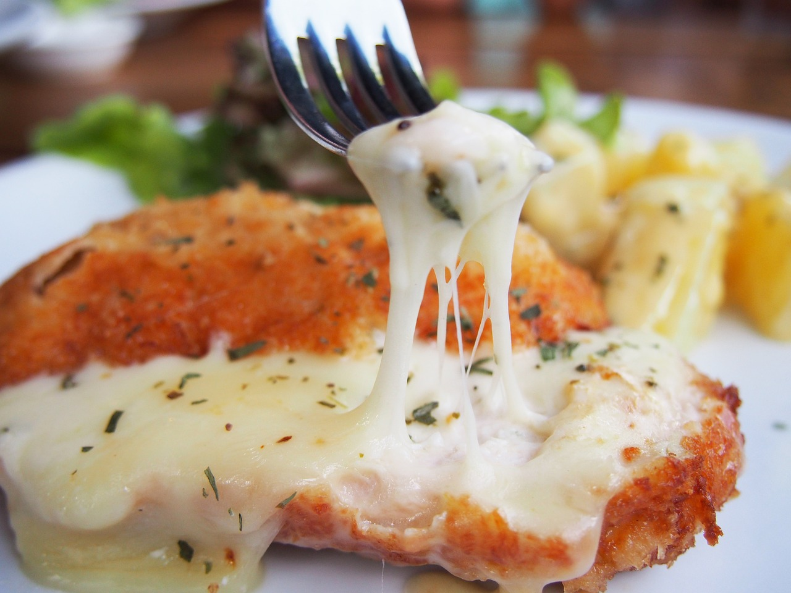

Healthy Alternative Recipes
The options for healthier options are difficult to consider, but they can still be delicious. We can decrease the amount of fat in the meal by swtiching the meatball meat to leaner alternatives. Another option to consider is to add veggies to our meatball making, such as chopped carrots, onions, or even celery.

Review
Nonna’s Meatball Sandwich recipe by Owen Han is a masterclass in traditional Italian-American comfort food. With its roots in a warm, nostalgic kitchen, this recipe brings together tender meatballs, a robust tomato gravy, and perfectly melted cheese, all cradled in a crusty Italian roll. The secret to its unparalleled flavor lies in its meticulous preparation and thoughtful tips, such as the reminder that “burned garlic is the enemy of a good tomato sauce,” which emphasizes the care required to achieve authentic taste.
The meatballs, crafted from ground chuck and sweet Italian sausage, are moistened by milk-soaked breadcrumbs and enriched with fresh parsley, garlic, and Parmigiano-Reggiano. Instead of browning, they are poached directly in a slowly simmered tomato gravy. This unconventional method ensures they remain exceptionally tender while absorbing the sauce’s deep, rich flavors. The sauce itself, made with San Marzano tomatoes, fresh basil, and a touch of sugar, is cooked to perfection over hours, becoming a deeply red and flavorful base.
The recipe offers clear, step-by-step instructions that make it accessible even for beginners. The final assembly elevates the dish to indulgent perfection. Each Italian roll is toasted with mozzarella, layered with the poached meatballs, and topped with extra sauce and a sprinkle of Parmigiano-Reggiano. The result is a harmonious combination of textures and flavors—savory, creamy, and slightly tangy.
An added benefit is the leftover sauce, which can be stored and repurposed for future meals. The recipe states specifically that it can last in the refrigerator for three days or can be frozen up to six months. This practical element underscores the recipe’s thoughtfulness and versatility, making it ideal for busy households or meal prep enthusiasts.
Nonna’s Meatball Sandwich is more than a meal; it’s an experience. It delivers not only on taste but also on the comfort and nostalgia of home-cooked traditions. A must-try for anyone seeking the true essence of Italian comfort food.
If you'd like to take a look at his recipe, and see more from LA Times: Nonna's Meatball Sandwich